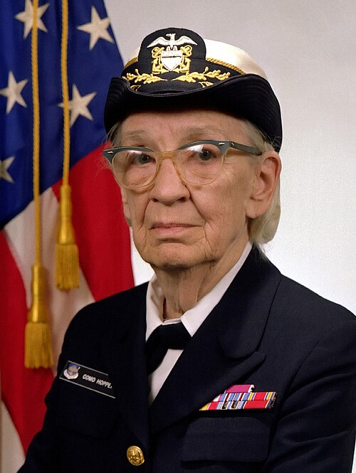

Grace Hopper, a trailblazing computer scientist and U.S. Navy Rear Admiral, revolutionized the world of computing. She developed the first compiler, a groundbreaking tool that transformed how programmers interact with computers, and played a pivotal role in the creation of COBOL, a language that has stood the test of time. HOpper was not just a technical genius, she was a visionary who championed the idea that programming languages should be accessible and machine independent. Her legacy continues to inspire generations of technologies, making her an enduring icon in the history of computing. Explore her remarkable journey and the indelible impact she left on technology and the world.Grace Brewster Murray Hopper (1906–1992) was an American mathematician, computer scientist, and U.S. Navy officer who became one of the pioneers of modern computing. Born in New York City in 1906, she developed a strong curiosity about how things worked from an early age and later studied mathematics and physics at Vassar College before earning a master's degree and PhD in mathematics from Yale University. She began her career as a mathematics professor at Vassar, but during World War II she joined the U.S. Navy Reserve and was assigned to Harvard's Mark I computer project in 1944. As one of the early programmers of the Mark I, she gained firsthand experience with the enormous and complicated machines that were being used for military and scientific calculations. Her combination of mathematical knowledge, curiosity, and military service provided the foundation for her later contributions to computer programming and technology.
Hopper continued her work in computing after World War II and became part of the team developing UNIVAC I, one of the first commercially produced electronic computers. She became particularly interested in making programming easier for humans and helped pioneer the use of compilers, which translate human-readable programming instructions into instructions a computer can execute. Her early work included the A-0 system and contributed to the development of FLOW-MATIC, an English-oriented programming language whose ideas influenced the development of COBOL (Common Business-Oriented Language). COBOL became an important language for business, government, banking, and other large organizations. Hopper also contributed to programming-language standards and promoted the idea that computers should be easier for people to program rather than requiring them to work directly with complicated machine instructions. Alongside her technology career, she maintained a long career in the U.S. Navy, eventually reaching the rank of rear admiral. She was also known for memorable demonstrations and stories, including the famous moth discovered inside the Mark II computer, although the term "computer bug" existed before that incident, and her use of pieces of wire to demonstrate the extremely small distance light travels in a nanosecond. Through her technical work, military service, teaching, and public speaking, Hopper became an important figure in the development of computing and an influential role model for women entering technology.
Grace Hopper retired from the U.S. Navy in 1986 after more than 42 years of service, but she continued working in technology as a senior consultant at Digital Equipment Corporation. She traveled widely and gave lectures to students, engineers, military personnel, and technology professionals, encouraging people to experiment, learn, and think creatively about computing. She died on January 1, 1992, at the age of 85 and was buried at Arlington National Cemetery with full military honors. Her influence continued long after her death through awards, scholarships, universities, technology programs, military facilities, and the Grace Hopper Celebration of Women in Computing. In 2016, she was posthumously awarded the Presidential Medal of Freedom. Hopper's legacy is significant because she helped move programming away from complicated machine-level instructions toward more human-readable programming languages, while her long military career demonstrated the growing importance of computing to the armed forces. For computer professionals, she represents an important figure in the history of programming; for military history, she represents the intersection of technology and service; and for women in technology, she remains an example of a woman who made a lasting contribution to computing during a period when the field was still developing and opportunities for women were much more limited.
In her 1982 lecture “Future Possibilities: Data, Hardware, Software, and People” at the National Security Agency, Capt. Grace Hopper shared her vision of how computing would evolve and emphasized that the future depended not only on faster hardware but also on better software, secure data, and well-trained people. She discussed the growing importance of using many smaller computers and processors working together, an idea related to the distributed and parallel computing systems we use today. She highlighted the need to protect sensitive information, improve computer security, and separate data according to its purpose and level of confidentiality. Hopper also emphasized good software engineering, particularly modular design, clear interfaces, maintainability, standard programming languages, and software portability, warning organizations about the long-term costs of systems that depended too heavily on specific hardware or vendors. Beyond technology, she focused strongly on people and leadership, encouraging organizations to train young professionals, recognize their abilities, develop their communication and technical skills, and give them opportunities to take responsibility and try new ideas. Drawing from her military and computing experience, Hopper presented technology as a combination of hardware, software, data, security, and people, arguing that successful organizations must prepare for technological change rather than simply react to it. Her lecture remains relevant because many of the challenges she discussed in 1982—distributed computing, cybersecurity, maintainable software, interoperability, leadership, and developing technology professionals—continue to be important in modern computing. Lost thought lost to time because it was recorded on media no loner supported by mordern playback equipment, the lecture was recently recovered and released to the world. You can watch in two parts below.
The Grace Hopper Celebration (GHC) 2026 is a major technology and professional-development event organized by AnitaB.org, bringing together women in technology and allies from around the world to learn, connect, build skills, and explore career opportunities. The 2026 event will take place October 27–30, 2026, at the Anaheim Convention Center in Anaheim, California. The event focuses on current and emerging technology, with particular attention to artificial intelligence, technical skills, leadership, career development, innovation, and the future of technology. Participants can attend keynote presentations, expert-led technical and career sessions, interactive workshops, networking activities, community events, and technology demonstrations. The event also provides opportunities to meet organizations that are hiring, explore career opportunities through the Talent Expo, and discover emerging technologies through the Tech Expo. GHC also includes networking experiences such as Braindate discussions, speaker meet-and-greets, networking receptions, and community activities where participants can exchange knowledge and build professional relationships. The 2026 speakers include technology leaders and public figures such as Sinead Bovell, Kara Swisher, Baratunde Thurston, Michelle Zatlyn, Michelle Curran, Cathy Hackl, Telle Whitney, and others. For people who cannot attend in person, Virtual Grace Hopper Celebration (vGHC) provides access to a virtual career fair, selected on-demand sessions, and live opening and closing plenaries. Overall, GHC is designed to combine technology learning, AI awareness, career development, networking, mentorship, and interaction with employers, giving participants opportunities to strengthen their technical knowledge, understand new technologies, expand their professional network, and plan their next career steps.
For more details, visit GHC 2024